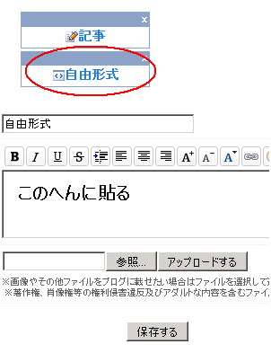
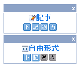

ブログにグーグルアドセンスを貼る方法
無料ブログでよく利用されているアフィリエイトプログラムにグーグルアドセンスというのがあるんですが、ブログにグーグルアドセンスの広告タグを貼る方法ってけっこう難しいようなんです。
ブログによっては利用できるところもあるようなんで、それぞれの簡単な貼り付け方法をちょっと調べてみようと思います。
わたしもまだブログ初心者なのでひょっとしたら間違っていることもあるかもです。アドセンス規約や公式サイトを確認して規約違反にならないような貼り方にするのがいいと思います。
ブログ別のアドセンス広告の貼り方
アドセンスはむりっぽい？無料ブログ
- 楽天ブログ
- ヤフーブログ
- ＧＯＯブログ？
- ココログ？
有料化にすると貼りやすいブログ
- ライブドアブログ
- はてなダイアリー
無料でも貼りやすいブログ
- シーサーブログ
- blogger
- ＦＣ２ブログ（カテゴリによる）
- ジュゲムブログ
ブログごとで共通するアドセンスタグの取得方法
アドセンスタグ（htmlソース）のコピーとは？
アドセンスタグをコピーして貼りつけるというのは、機械語のごちゃごちゃしてるのを選択（左クリックで青色反転）し、マウスの右クリックで「コピー」のところを押すことを指しています。（キーボード操作でも可能。）
アドセンスタグ（htmlソース）の貼り付けとは？
アドセンスタグをコピーしたあとに、貼り付けたい場所（自分のブログ）で右クリックをし、「貼り付け」のところを押すことを指しています。
ブログに貼り付ける際に気をつけたいこと
記事下やサイドバーがぶなんな場所
無料ブログに貼り付ける際は記事中に貼り付けない方がいいと思います。
記事中に貼り付けてしまうと、記事や画像と接近してしまうため規約違反の可能性が出てきますし、自動改行をするに設定している場合、うまく表示されないなどいろいろ面倒くさいです。
記事下、もしくはサイドバーが一番ぶなんな場所です。
似たような広告があるブログには貼り付けない
グーグルアドセンスと似たような広告があるブログには貼り付けることができないので、どちらかいっこにした方がいいと思います。
ヤフーアドや楽天アド、シーサーデフォルトなどのテキスト広告がある場合は規約違反にあたると思います。そのほか、ブログのタグページなどのコンテンツのない場所に表示させるのも規約違反になる可能性が高いようです。
特殊な形のアドセンスタグの貼り付けブログ
無料ブログサービスによってアドセンス広告タグの貼り付け方には違いがあります。特に、グーグルブログのbloggerやはてなダイアリーではタグを貼り付けるというよりも、設定することにより表示されるタイプのブログサービスのようです。
グーグルブログのbloggerの場合
一番簡単なのはグーグルブログの blogger ですが、記事下に表示させる場合は「レイアウトーブログの投稿ー編集」の欄で広告を表示するに設定するといいようです。
サイドバーに設置する場合も、「レイアウトーガジェットを追加」の箇所を押せば、ＩＤ設定など指示に従うだけで表示されるようになると思います。
表示回数を追跡する場合は、アドセンスの管理画面で、url チャネルであなたの blogger ブログのアドレスを入力しておけば大丈夫です。blogger の場合、個別広告ごとのチャネル設定できないような気がします。
はてなダイアリーの場合
はてなダイアリーの場合ははてなポイントを購入して有料オプションにするとＩＤ設定などでブログにグーグルアドセンスを表示できるようになると思います。
アドセンスのほかにもアマゾンなどそのほかのアフィリエイト設定も有料ブログにしないと無理な感じのようです。
ライブドアブログの場合
ライブドアブログの場合はデフォルトでアドセンス広告が表示されているため、違う広告にする必要がありますが、有料化ブログにすると広告非表示にできるのでやりやすいと思います。
有料化にしたあと、デフォルトのアドセンス広告を表示させない設定にして、デフォルトの対応する箇所に自分のアドセンスコードを貼り付けるという感じです。
ただ、トップページ、記事ページ、カテゴリページなどそれぞれに表示させるには同じ作業をしなくてはいけないので多少めんどうくさい印象があったりします。
ＦＣ２ブログの場合やジュゲムブログの場合
ＦＣ２やジュゲム、忍者ブログの場合は上のアドセンスタグの取得方法の箇所で取得したhtmlソースをそのまま、htmlの場所に貼り付けるだけです。
記事中に貼り付けてしまうと、表示されない場合やたくさん表示されてしまうこともあると思うので、ぶなんな場所に表示させるのがいいと思います。
シーサーブログの場合
シーサーブログの場合はまず、デフォルトの広告とアドセンス広告が似ているので、デフォルト広告を表示させない設定にする必要がありますが、シーサーブログ側でこれを許可しているのかはわかりません。
でも、ヘルプによると強制ではないようなふいんきです。
コンテンツマッチ広告は強制掲載なのですか？
削除されてしまう可能性もあるので、大切なブログの場合はデフォルトの広告のアフィリエイトプログラムを利用することをおすすめします。
その前提の上でシーサーブログでグーグルアドセンスを利用する場合は、「デザインーコンテンツ」で自由形式を貼り付けたい場所にもっていき、そこに取得したアドセンスタグを貼り付けるといいと思います。

過去ログやカテゴリには表示したくないなって思った場合は、ボタンのオンとオフで選択すればいいので割と簡単だと思います。

そのほか、自由形式を利用しなくても、「デザインーコンテンツー記事ーコンテンツhtml編集」の欄に貼り付けたりすることもできますが、トップページやカテゴリにたくさん表示されてしまうこともあるので面倒くさいので自由形式に貼り付ける方法が簡単だと思います。
ちなみに、記事投稿する際の「この記事の詳細設定」の箇所で改行を変換しないに設定して記事中に貼り付けることも可能なようですが、これもトップページなどにたくさん表示されてしまいますし、記事本文と接近してまぎらわしいので、やっぱ、自由形式が一番ぶなんだと思います。
そのほか、自分のブログと似たようなカラーにアドセンス広告を最適化する場合は、ＣＳＳスタイルシートの色彩コードを参照すると正確ですが、パワースポイトなどの無料ツールをダウンロードして自分のブログレイアウトの色彩コードを調べてみると初心者簡単だと思います。
設定がうまくいかないとかの場合はアドセンスのヘルプフォーラムなどで質問してみると、親切な方が教えてくれることもあるらしいので、一度ごらんになってみるといいと思います。
- 無料ブログでグーグルアドセンス
グーグルのグーグルアドセンスは、あなたのブログやサイトに広告を自動で表示してくれるグーグルの無料サービスのことです。 グーグルアドセンスは毎回同じ広告ということではなく、時間の経過やクリック率、クリッ... - アドセンス単価と無料ブログの一等地
最近設置したグーグルビデオにはＮＨＫのグーグル関係のものが入っているのですが、海外でのグーグルアドセンスは割と単価も高いようで結構な収益を上げている人も多いるようです。 でも、日本ではヤフーが結構強...